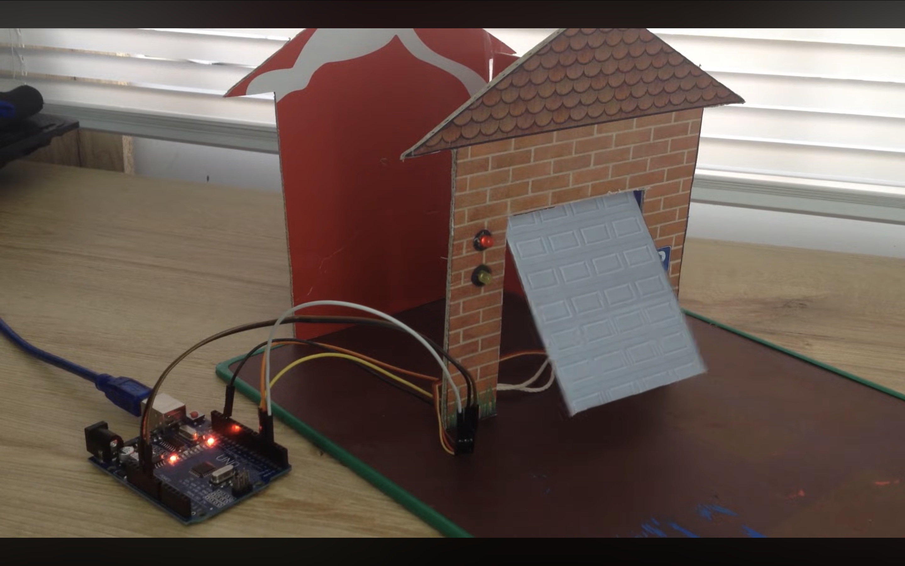
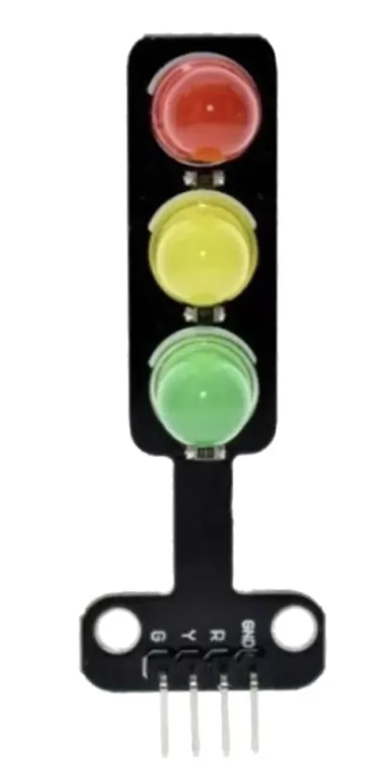
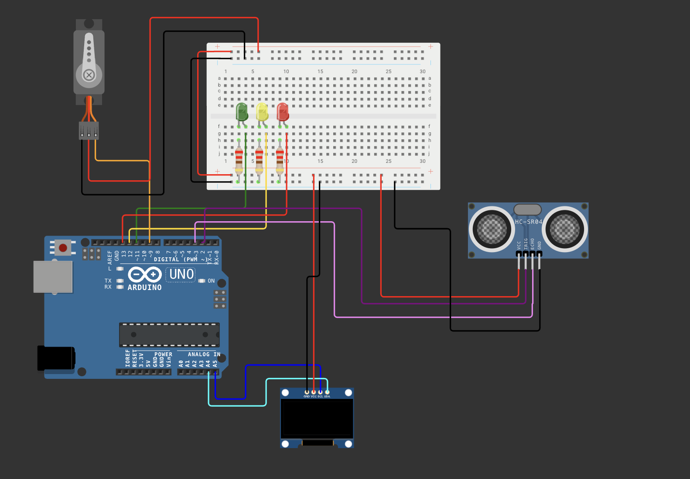
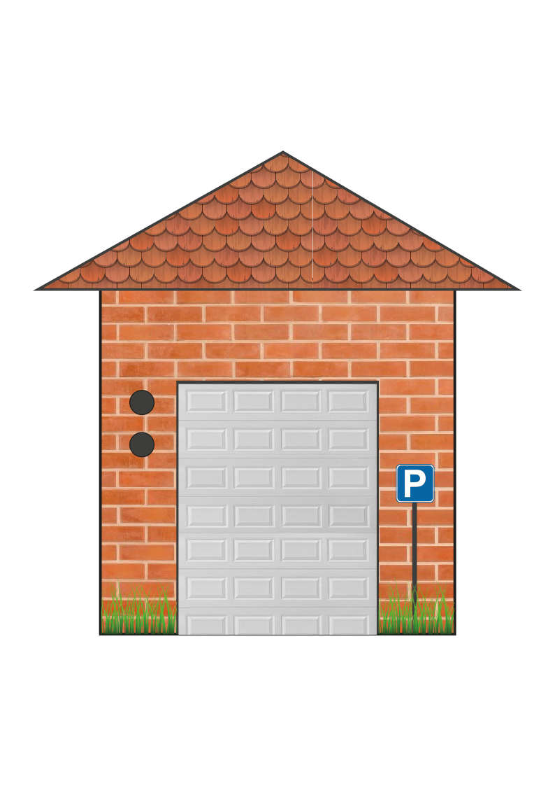
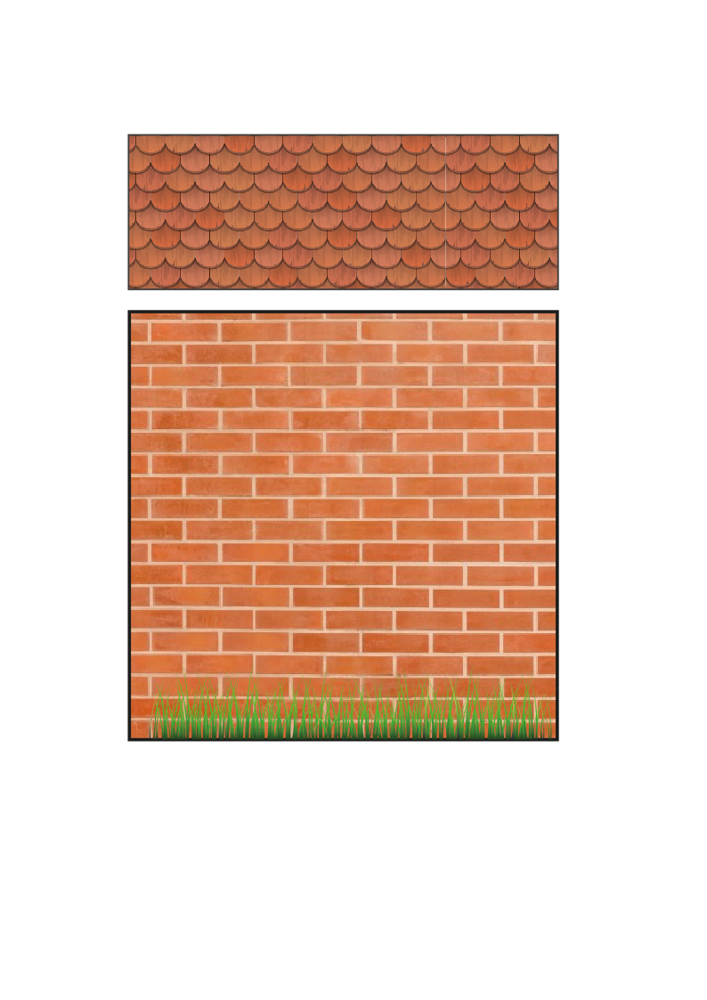
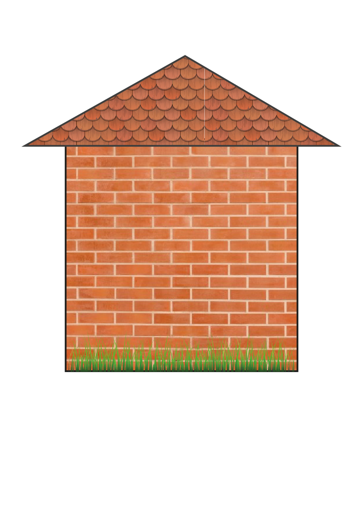
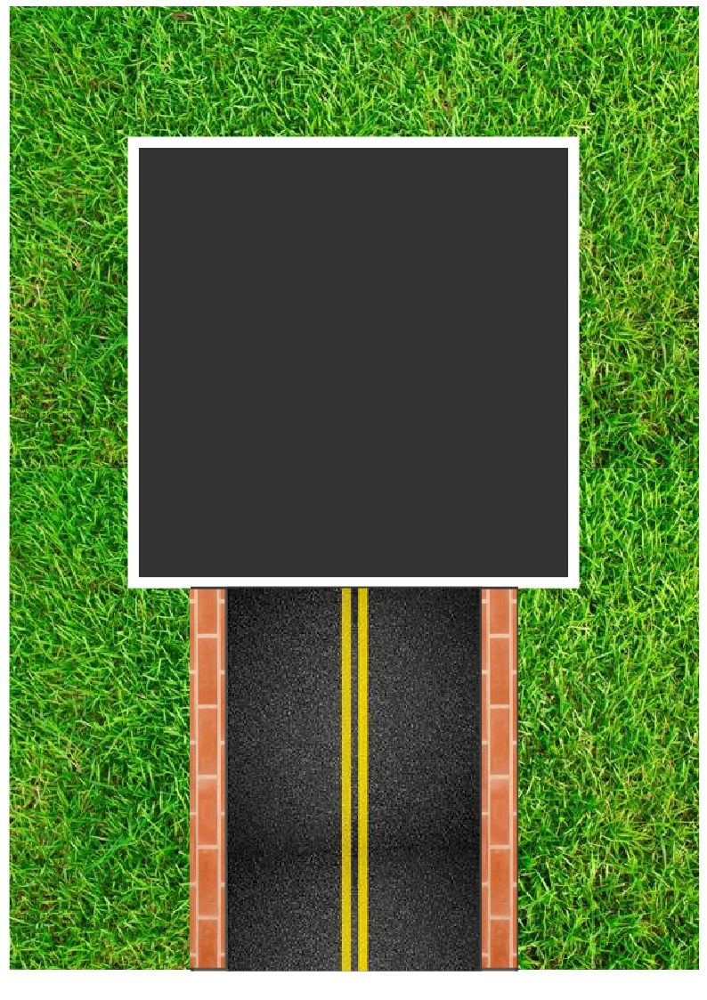

Guía de trabajo
Proyecto: Garage automático con Arduino, sensor ultrasónico, servo, semáforo y pantalla OLED
Asignatura: Programación / Electrónica / Sistemas embebidos
Modalidad: Individual o por equipos
Duración estimada: 2 a 3 sesiones
Producto final: Simulación funcional y explicación del funcionamiento del sistema
Completa la práctica en pantalla, registra observaciones del sistema y al final guarda tus respuestas en PDF.
1. Nombre de la práctica
Desarrollo de un sistema de garage automático con control de acceso mediante sensor ultrasónico, barrera con servo motor, semáforo y pantalla OLED.
2. Propósito
Diseñar, simular y comprender el funcionamiento de un sistema automatizado de acceso vehicular que detecta la presencia de un automóvil, controla una barrera de entrada y muestra mensajes en una pantalla OLED, utilizando Arduino como unidad de control.
3. Competencias a desarrollar
- Identifica la función de sensores y actuadores dentro de un sistema automatizado.
- Comprende el uso del sensor ultrasónico para medir distancia.
- Aplica estructuras de programación para controlar dispositivos electrónicos.
- Interpreta la lógica de un sistema de acceso automatizado.
- Desarrolla simulaciones funcionales en Wokwi.
- Relaciona el código con el comportamiento físico del circuito.
4. Aprendizajes esperados
- Medir distancias con el sensor HC-SR04.
- Controlar un servo motor para abrir y cerrar una barrera.
- Utilizar una pantalla OLED para mostrar mensajes del sistema.
- Representar visualmente el estado del acceso con un semáforo.
- Programar condiciones, ciclos y funciones para automatizar procesos.
- Realizar pruebas en simulación antes de pasar al circuito real.
5. Introducción
En la vida diaria existen múltiples sistemas automáticos que facilitan el acceso y control de espacios, como los garages eléctricos, estacionamientos inteligentes y accesos controlados. Estos sistemas combinan sensores, actuadores y dispositivos de salida visual para ofrecer seguridad, orden y comodidad.
En este proyecto se desarrollará un garage automático que funciona de la siguiente forma:
- El sensor ultrasónico detecta la cercanía de un vehículo.
- Si el vehículo está dentro de una distancia permitida, el sistema cambia el semáforo a verde.
- La barrera se abre mediante un servo motor.
- La pantalla OLED muestra un mensaje de bienvenida.
- Después de un tiempo, el sistema avisa con la luz amarilla que la barrera se cerrará.
- Finalmente, el semáforo vuelve a rojo y la barrera se cierra.
Para facilitar el diseño, el circuito puede simularse en Wokwi, ya que esta plataforma permite integrar de forma sencilla la pantalla OLED. En la simulación pueden emplearse LEDs y resistencias como referencia visual del semáforo, mientras que en el montaje real se utilizará un módulo de semáforo, el cual ya integra los LEDs necesarios.

6. Materiales
Para simulación en Wokwi
- 1 Arduino Uno
- 1 sensor ultrasónico HC-SR04
- 1 servo motor
- 1 pantalla OLED I2C SSD1306
- 3 LEDs de referencia: rojo, amarillo y verde
- 3 resistencias de 220 ohms
- Cables de conexión virtuales
Para montaje real
- 1 Arduino Uno
- 1 sensor ultrasónico HC-SR04
- 1 servo motor
- 1 pantalla OLED I2C SSD1306
- 1 módulo de semáforo de 3 luces
- Protoboard
- Cables Dupont
- Fuente de alimentación o cable USB
Nota importante: en el circuito real no será necesario usar los tres LEDs y las resistencias por separado si se cuenta con el módulo de semáforo, ya que este integra el sistema visual de luces. En la simulación sí pueden colocarse LEDs individuales como apoyo para representar cada color del semáforo.
7. Conceptos previos
Sensor ultrasónico HC-SR04
Permite medir la distancia entre el sensor y un objeto. Envía un pulso ultrasónico y calcula el tiempo que tarda en regresar el eco.
Servo motor
Es un actuador que puede colocarse en posiciones específicas mediante ángulos. En este proyecto se utiliza para mover la barrera del garage.
Pantalla OLED
Se utiliza para mostrar mensajes del sistema, como el estado del acceso, la distancia detectada y mensajes de bienvenida.
Semáforo
Representa visualmente el estado del garage:
- Rojo: acceso cerrado.
- Verde: acceso permitido.
- Amarillo: advertencia de cierre.

Wokwi
Es una plataforma de simulación electrónica en línea que permite diseñar, conectar y probar circuitos con Arduino. En este proyecto es especialmente útil por la integración sencilla de la pantalla OLED.
Referencias visuales

8. Desarrollo de la práctica
Etapa 1. Análisis del problema
El estudiante deberá comprender la lógica del sistema:
- El garage permanece cerrado.
- El sensor mide constantemente la distancia.
- Si detecta un vehículo cerca, permite el acceso.
- El semáforo cambia de color según el estado del acceso.
- La barrera se abre y posteriormente se cierra.
- La pantalla muestra mensajes relacionados con el proceso.
Etapa 2. Diseño del circuito
Se deberá construir el circuito en simulación considerando:
- Sensor ultrasónico conectado a pines digitales.
- Servo conectado a un pin PWM o compatible con la librería Servo.
- OLED conectada por I2C.
- LEDs conectados solo como referencia del semáforo en simulación.
Aclaración importante: en el proyecto real puede sustituirse el conjunto de tres LEDs por un módulo de semáforo, manteniendo la misma lógica del programa.
Etapa 3. Programación del sistema
El código debe cumplir con las siguientes acciones:
- Medir la distancia.
- Mostrar el estado del garage en la OLED.
- Encender el color correspondiente del semáforo.
- Abrir la barrera al detectar un vehículo dentro del umbral.
- Cerrar la barrera después de la cuenta regresiva.
- Evitar que el ciclo se repita continuamente mientras el automóvil siga enfrente.
Etapa 4. Simulación y pruebas en Wokwi
Se recomienda probar el sistema en Wokwi porque:
- Facilita la conexión de la pantalla OLED.
- Permite visualizar el funcionamiento antes del montaje físico.
- Ayuda a detectar errores de lógica, conexión o programación.
- Hace más sencillo ajustar el movimiento del servo y el comportamiento del sensor.
Durante la simulación, el estudiante debe verificar:
- Si la distancia se detecta correctamente.
- Si la barrera abre y cierra.
- Si el semáforo cambia correctamente.
- Si la OLED muestra los mensajes esperados.
- Si el sistema se reinicia adecuadamente cuando el auto se retira.
Etapa 5. Explicación del funcionamiento
Cada estudiante o equipo deberá explicar:
- Qué hace cada componente.
- Cómo funciona el sensor ultrasónico.
- Por qué se usan funciones en el código.
- Cómo se controla el servo.
- Cómo la pantalla OLED mejora la interacción con el usuario.
- Por qué Wokwi es útil como etapa previa al montaje real.
9. Código base del proyecto
#include <Wire.h>
#include <Adafruit_GFX.h>
#include <Adafruit_SSD1306.h>
#include <Servo.h>
// ---------------- OLED ----------------
#define SCREEN_WIDTH 128
#define SCREEN_HEIGHT 64
#define OLED_RESET -1
Adafruit_SSD1306 oled(SCREEN_WIDTH, SCREEN_HEIGHT, &Wire, OLED_RESET);
// LEDs (semaforo)
const int rojo = 13;
const int amarillo = 12;
const int verde = 11;
// Ultrasonico HC-SR04
const int TRIG = 2;
const int ECHO = 3;
// Servo
Servo barrera;
const int pinServo = 9;
const int POS_ABIERTO = 0;
const int POS_CERRADO = 90;
// Config
const int UMBRAL_CM = 25;
const int HISTERESIS = 10;
long medirCM() {
digitalWrite(TRIG, LOW);
delayMicroseconds(2);
digitalWrite(TRIG, HIGH);
delayMicroseconds(10);
digitalWrite(TRIG, LOW);
long dur = pulseIn(ECHO, HIGH, 30000);
if (dur == 0) return 999;
long cm = (long)(dur * 0.0343 / 2.0);
if (cm < 0) cm = 999;
if (cm > 999) cm = 999;
return cm;
}
void setLeds(bool r, bool y, bool g) {
digitalWrite(rojo, r);
digitalWrite(amarillo, y);
digitalWrite(verde, g);
}
void mostrarMensaje(const char* l1, const char* l2, int tiempo) {
oled.clearDisplay();
oled.setTextColor(SSD1306_WHITE);
oled.setTextSize(1);
oled.setCursor(0, 10);
oled.println(l1);
oled.setCursor(0, 30);
oled.println(l2);
oled.display();
delay(tiempo);
}
void mostrarDistancia(long cm) {
oled.clearDisplay();
oled.setTextColor(SSD1306_WHITE);
oled.setTextSize(1);
oled.setCursor(0, 0);
oled.println("Acceso cerrado");
oled.setCursor(0, 20);
oled.print("Distancia: ");
oled.print(cm);
oled.println(" cm");
oled.display();
}
void cuentaRegresiva(int segundos, int ledPin, int posicionServo,
const char* msg1, const char* msg2,
bool moverServoAlFinal = false) {
digitalWrite(rojo, LOW);
digitalWrite(amarillo, LOW);
digitalWrite(verde, LOW);
digitalWrite(ledPin, HIGH);
if (!moverServoAlFinal) {
barrera.write(posicionServo);
}
for (int i = segundos; i >= 0; i--) {
oled.clearDisplay();
oled.setTextColor(SSD1306_WHITE);
oled.setTextSize(1);
oled.setCursor(0, 10);
oled.println(msg1);
oled.setCursor(0, 30);
oled.print(msg2);
oled.print(" ");
oled.print(i);
oled.print("s");
oled.display();
delay(1000);
}
if (moverServoAlFinal) {
barrera.write(posicionServo);
}
digitalWrite(ledPin, LOW);
}
void setup() {
if (!oled.begin(SSD1306_SWITCHCAPVCC, 0x3C)) {
while (true);
}
oled.clearDisplay();
oled.display();
pinMode(rojo, OUTPUT);
pinMode(amarillo, OUTPUT);
pinMode(verde, OUTPUT);
pinMode(TRIG, OUTPUT);
pinMode(ECHO, INPUT);
barrera.attach(pinServo);
barrera.write(POS_CERRADO);
setLeds(true, false, false);
mostrarMensaje("Garage", "Sistema listo", 1500);
}
void loop() {
long cm = medirCM();
barrera.write(POS_CERRADO);
setLeds(true, false, false);
mostrarDistancia(cm);
delay(200);
if (cm <= UMBRAL_CM) {
cuentaRegresiva(5, verde, POS_ABIERTO, "Bienvenido", "a casa", false);
mostrarMensaje("Acceso abierto", "Pase por favor", 1200);
cuentaRegresiva(2, amarillo, POS_CERRADO, "Atencion", "Cerrando en:", true);
mostrarMensaje("Barrera bajando", "Espere...", 1200);
cuentaRegresiva(5, rojo, POS_CERRADO, "Acceso cerrado", "Espere luz verde:", false);
mostrarMensaje("No pase", "Espere luz verde", 1200);
while (medirCM() <= (UMBRAL_CM + HISTERESIS)) {
setLeds(true, false, false);
oled.clearDisplay();
oled.setTextColor(SSD1306_WHITE);
oled.setTextSize(1);
oled.setCursor(0, 10);
oled.println("Retire el auto");
oled.setCursor(0, 30);
oled.println("Para reiniciar");
oled.display();
delay(400);
}
oled.clearDisplay();
oled.display();
}
}10. Indicaciones para el estudiante
- Construye el circuito en Wokwi.
- Verifica que todos los componentes estén correctamente conectados.
- Carga el código base.
- Ejecuta la simulación.
- Acerca el objeto al sensor ultrasónico.
- Observa el cambio del semáforo.
- Revisa la apertura y cierre de la barrera.
- Analiza los mensajes mostrados en la OLED.
- Realiza las pruebas necesarias.
- Responde el practicario.
Practicario
Proyecto: Garage automático con Arduino
A. Observación y comprensión
B. Análisis del circuito
C. Análisis del código
D. Reflexión y aplicación
E. Actividad de análisis técnico
F. Conclusión
Actividad complementaria opcional
Realiza una mejora al proyecto y descríbela brevemente.
Evidencias sugeridas
- Captura de la simulación en Wokwi.
- Fotografía del circuito físico, si lo realizan.
- Captura del código.
- Breve explicación escrita del funcionamiento.
- Respuestas del practicario.
Observación didáctica
Para este proyecto conviene explicar a los alumnos que en simulación los LEDs y resistencias solo sirven como representación visual del semáforo, mientras que en el montaje real puede emplearse directamente el módulo de semáforo.
La pantalla OLED hace más clara la interacción del sistema con el usuario y Wokwi es una excelente herramienta para diseñar y previsualizar el circuito antes de armarlo físicamente.
Maqueta de referencia
Estas imágenes pueden servir como apoyo para planear y construir la maqueta del garage automático. Puedes usarlas como referencia para la estructura, distribución de piezas y presentación del proyecto.

{kind=link}

{kind=link}

{kind=link}

{kind=link}
Firma de revisión
Profesor: ____________________________________